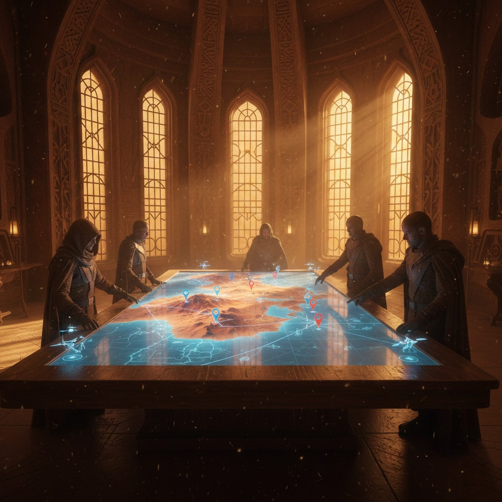

Cartographie
Accès aux bases, ressources et stratégie territoriale.
Métiers
Simulateur de talents, optimisations et commandes de craft.

Missions
Planificateur de soirées Landsraad et gestion des groupes.

Migration
Coordinateur de déplacement de guilde vers Icarus — réservation et validation des sietchs.
Chroniques
Quinze mille ans d'histoire de l'univers de Dune (A. Odoardi).

Œil du Mentat
Télémétrie des mondes — population, sietches dominants et fluctuations temporelles.